|

|
Read the Docs featuresThis will serve as a list of all of the features that Read the Docs currently has. Some features are important enough to have their own page in the docs, others will simply be listed here. GitHub, Bitbucket and GitLab IntegrationWe now support linking by default in the sidebar. It links to the page on your host, which should help people quickly update typos and send pull requests to contribute to project documentation. More information can be found in Version Control System Integration. Auto-updatingThe Webhooks page talks about the different ways you can ping RTD to let us know your project has been updated. We have official support for GitHub, Bitbucket and GitLab, and anywhere else we have a generic post-commit hook that allows you to POST to a URL to get your documentation built. InternationalizationRead the Docs itself is localized, and we support documentation translated into multiple languages. Read more on the Localization of Documentation and Internationalization pages. Canonical URLsCanonical URLs give your docs better search performance, by pointing all URLs to one version. This also helps to solve the issues around users landing on outdated versions of documentation. More information can be found in the Canonical URLs page. VersionsWe can build multiple versions of your documentation. Look on the “Versions” page of your project’s admin (using the nav on the left) to find a list of available versions that we’ve inferred from the tags and branches in your source control system (according to the support matrix below). On the Versions page you can tell us which versions you’d like us to build docs for, whether each should be public, protected, or private, and what the default version should be (we’ll redirect there when someone hits your main project page, e.g., http://my-project.rtfd.org/). Version Control Support Matrix
PDF GenerationWhen you build your project on RTD, we automatically build a PDF of your project’s documentation. We also build them for every version that you upload, so we can host the PDFs of your latest documentation, as well as your latest stable releases as well. SearchWe provide full-text search across all of the pages of documentation hosted on our site. This uses Elasticsearch as the search backend. We hope to be integrating this into the site more fully in the future. Alternate DomainsWe provide support for custom domains, subdomains, and a shorturl for your project as well. This is outlined in the Custom Domains section. |
||||||||||||||||||||
|
FIRST STEPS GETTING STARTED
ADVANCED FEATURES
ABOUT READ THE DOCS
|